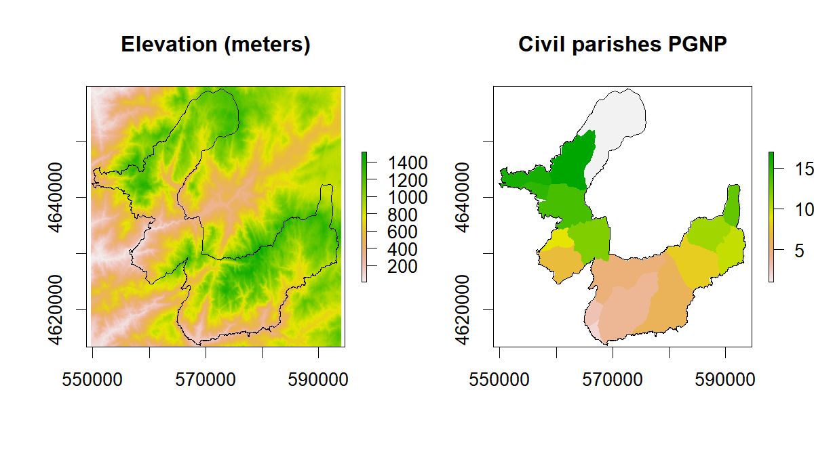

P4 Spatial data analysis: introduction to raster processing (part-3)
Joao Goncalves
17 November 2017
Background
In the third part of this tutorial series on spatial data analysis using the raster package, we will explore more functionalities, namely:
- Masking,
- Aggregation,
- Zonal analysis, and,
- Cross-tabulation.
For more information on raster data processing see here, as well as the tutorial part-1, and, tutorial part-2 of this series.
Raster masking
Masking a raster is often required when we want to represent and/or analyze only the pixels included in a specific area or region. In turn, the remaining pixels are transformed into NA’s (or other user-defined value).
For this purpose we can use the mask function. This requires to input a ‘mask’ layer that can be either a Raster* object (with the same extent and resolution), or a Spatial* object (e.g., SpatialPolygons) in which case, all cells that are not covered by this object are set to updatevalue (NA by default).
We will start by downloading, uncompressing and loading the sample data. A SpatialPolygons* layer will be used as the mask layer. The objective of this example is to mask elevation values that are inside the Peneda-Geres National Park (NW Portugal). First up, let’s prepare the elevation data:
library(raster)
## Create a folder named data-raw inside the working directory to place downloaded data
if(!dir.exists("./data-raw")) dir.create("./data-raw")
## If you run into download problems try changing: method = "wget"
download.file("https://raw.githubusercontent.com/joaofgoncalves/R_exercises_raster_tutorial/master/data/srtm_pnpg.zip", "./data-raw/srtm_pnpg.zip", method = "auto")
unzip("./data-raw/srtm_pnpg.zip", exdir = "./data-raw")
rst <- raster("./data-raw/srtm_pnpg.tif")Now, let’s download and read the mask layer (using rgdal):
library(sp)
library(rgdal)
## If you run into download problems try changing: method = "wget"
download.file("https://raw.githubusercontent.com/joaofgoncalves/R_exercises_raster_tutorial/master/data/BOUNDS_PNPG.zip", "./data-raw/BOUNDS_PNPG.zip", method = "auto")
unzip("./data-raw/BOUNDS_PNPG.zip", exdir = "./data-raw")
# Read the mask layer and convert it to a 'simpler' SpatialPolygons dataset
maskLayer <- as(readOGR(dsn = "./data-raw", layer = "pnpg_bounds"), "SpatialPolygons")## OGR data source with driver: ESRI Shapefile
## Source: "./data-raw", layer: "pnpg_bounds"
## with 1 features
## It has 5 fieldsPlot the data to see if everything is OK:
plot(rst, main="Elevation (meters) for Peneda-Geres\n National Park", xlab="X-coordinates",
ylab = "Y-coordinates")
plot(maskLayer, add=TRUE)
Finally, let’s mask the values for the PG National Park boundaries:
rstMasked <- mask(rst, maskLayer)
plot(rstMasked, main="Elevation (meters) for Peneda-Geres\n National Park", xlab="X-coordinates",
ylab = "Y-coordinates")
plot(maskLayer, add=TRUE)
From the image, we can see that only pixels occurring inside the Park are represented or ‘masked’. Exactly what we wanted! 😄 👍 😉
Raster aggregation
Raster aggregation is the process of creating a new RasterLayer by grouping cell values in a rectangular area to create larger/coarser cells. This grouping can employ any user-defined function to summarize multiple values (in the rectangular area) and provide a single value (e.g., mean, sd, min, max, sum). This ‘upsampling’ allows to represent and analyze the spatial distribution of cell values inside each rectangular area.
The aggregate function will be used for this purpose. The ‘coarseness’ of the aggregation is controlled by the fact parameter (aggregation factor) which expresses the number of cells in each direction (horizontal and vertical). Alternatively, two integers can be used to separately express the horizontal and vertical aggregation factors.
Let’s see how this works out with different aggregation factors:
* Aggregation factor 2 - pixel size 160(m)
* Aggregation factor 7 - pixel size 560(m)# Aggregation factor = 2
rstAggFact2Mean <- aggregate(rst, fact = 2, fun = mean)
rstAggFact2SD <- aggregate(rst, fact = 2, fun = sd)
# Aggregation factor = 7
rstAggFact7Mean <- aggregate(rst, fact = 7, fun = mean)
rstAggFact7SD <- aggregate(rst, fact = 7, fun = sd)
# Plot the newly aggregated rasters
par(mfrow = c(2,2))
plot(rstAggFact2Mean, main = "Aggregation factor = 2 | Mean")
plot(rstAggFact2SD, main = "Aggregation factor = 2 | SD")
plot(rstAggFact7Mean, main = "Aggregation factor = 7 | Mean")
plot(rstAggFact7SD, main = "Aggregation factor = 7 | SD")
Notice the change in coarseness as we move from an aggregation factor of 2 to 7, with much less detail in the latter. In this particular example (a DEM analysis), and for larger factors, it allows us to understand general land-forms (mean) and also topographic heterogeneity (standard-deviation).
Zonal analysis
For this part of the tutorial we will address zonal analysis. This method allows to summarize the values in a Raster* object for each “zone” included in a RasterLayer (typically defined by an integer code). The zonal function is used for this objective. Notice that both Raster* input objects must have the same extent, resolution, and, CRS.
Applications of this technique include summarizing cell values for administrative regions (like in the example explored below) or, calculating summary statistics for raster segments (useful in an object-based image analysis approach).
In the example we will calculate zonal statistics for elevation data for each civil parish (N=17) within the Peneda-Geres National Park (PGNP - NW Portugal).
As costumary, We will start by downloading, uncompressing and loading civil parish data:
## If you run into download problems try changing: method = "wget"
download.file("https://raw.githubusercontent.com/joaofgoncalves/R_exercises_raster_tutorial/master/data/CIVPARISH_PNPG.zip", "./data-raw/CIVPARISH_PNPG.zip", method = "auto")
unzip("./data-raw/CIVPARISH_PNPG.zip", exdir = "./data-raw")
rstCivPar <- raster("./data-raw/PNPG_CivilParishes.tif")Plot the data to see if it’s OK:
par(mfrow = c(1,2))
plot(rst, main="Elevation (meters)")
plot(maskLayer, add=TRUE)
plot(rstCivPar, main="Civil parishes PGNP")
plot(maskLayer, add=TRUE)

We can now calculate elevation statistics for each civil parish (identified by an integer number). zonal accepts summarizing functions (in argument fun) with single or multiple outputs. In the example below we will calculate the mean.
# Single-output
zonal(rst, rstCivPar, fun=mean)## zone value
## [1,] 1 1041.2407
## [2,] 2 308.6019
## [3,] 3 622.7727
## [4,] 4 790.4464
## [5,] 5 970.8552
## [6,] 6 787.0810
## [7,] 7 549.3588
## [8,] 8 963.2459
## [9,] 9 307.2516
## [10,] 10 1106.3882
## [11,] 11 1156.9009
## [12,] 12 713.7014
## [13,] 13 1044.0795
## [14,] 14 641.9319
## [15,] 15 1023.6904
## [16,] 16 867.7098
## [17,] 17 930.2353In the next example, column #1 equals the median and column #2 the median-absolute deviation which is obtained by a specific multi-output function:
# Multi-output
zonal(rst, rstCivPar, fun=function(x,...) c(MED=median(x,...), MAD=mad(x,...)))## zone value_1 value_2
## [1,] 1 1059.0 171.9816
## [2,] 2 271.0 131.9514
## [3,] 3 637.0 191.2554
## [4,] 4 813.5 405.4911
## [5,] 5 956.0 293.5548
## [6,] 6 765.0 392.8890
## [7,] 7 555.5 306.1569
## [8,] 8 954.0 219.4248
## [9,] 9 289.0 182.3598
## [10,] 10 1125.0 123.0558
## [11,] 11 1162.0 96.3690
## [12,] 12 698.0 332.1024
## [13,] 13 1024.0 240.1812
## [14,] 14 617.0 265.3854
## [15,] 15 1017.0 195.7032
## [16,] 16 875.0 413.6454
## [17,] 17 977.0 189.7728Cross-tabulation of two discrete/categorical raster datasets
Performing a cross-tabulation of two raster datasets is very useful when, for example, you want to assess land cover changes between two different dates. It is also a preliminary step for generating a confusion matrix from which several classification performance metrics can be calculated.
In this example, we will use Corine Land Cover (CLC), a dataset from the European Environmental Agency (EEA) for years 2006 and 2012, to analyze changes in land cover composition. In this case, we have two categorical rasters with integer values corresponding to different land cover classes (see details in the table below).
clcLeg <- read.csv(url("https://raw.githubusercontent.com/joaofgoncalves/R_exercises_raster_tutorial/master/data/legend_clc.csv"),
stringsAsFactors = FALSE)
clcLeg <- data.frame(clcLeg[,1:2],
CLC_abr=toupper(abbreviate(gsub("-"," ",clcLeg[,3]), 6)),
Label=clcLeg[,3], row.names = 1:nrow(clcLeg))
knitr::kable(clcLeg)| Raster_value | CLC_code | CLC_abr | Label |
|---|---|---|---|
| 1 | 111 | CNTNUF | Continuous urban fabric |
| 2 | 112 | DSCNUF | Discontinuous urban fabric |
| 7 | 131 | MNRLES | Mineral extraction sites |
| 12 | 211 | NNIRAL | Non-irrigated arable land |
| 13 | 212 | PRMNIL | Permanently irrigated land |
| 15 | 221 | VNYRDS | Vineyards |
| 18 | 231 | PASTRS | Pastures |
| 19 | 241 | ANCWPC | Annual crops with permanent crops |
| 20 | 242 | CMPLCP | Complex cultivation patterns |
| 21 | 243 | AGRWNV | Agriculture with natural vegetation |
| 23 | 311 | BRDLVF | Broad-leaved forest |
| 24 | 312 | CNFRSF | Coniferous forest |
| 25 | 313 | MXDFRS | Mixed forest |
| 26 | 321 | NTRLGR | Natural grasslands |
| 27 | 322 | MRSANH | Moors and heathland |
| 29 | 324 | TRNSWS | Transitional woodland-shrub |
| 31 | 332 | BRRCKS | Bare rocks |
| 32 | 333 | SPRSVA | Sparsely vegetated areas |
| 33 | 334 | BRNTAR | Burnt areas |
| 40 | 511 | WTRCRS | Water courses |
| 41 | 512 | WTRBDS | Water bodies |
Now, let’s download, uncompress and load the raster data into R and then perform the cross-tabulation:
## If you run into download problems try changing: method = "wget"
download.file("https://raw.githubusercontent.com/joaofgoncalves/R_exercises_raster_tutorial/master/data/CLC_06_12.zip", "./data-raw/CLC_06_12.zip", method = "auto")
unzip("./data-raw/CLC_06_12.zip", exdir = "./data-raw")
# Load the Corine Land cover dataset for 2006 and 2012
clc06 <- raster("./data-raw/clc2006_100m.tif")
clc12 <- raster("./data-raw/clc2012_100m.tif")
# 'Ratify' the rasters, i.e., inform that these are
# categorical/discrete datasets
clc06 <- ratify(clc06)
clc12 <- ratify(clc12)
# Perform the crosstab
ct <- crosstab(clc06, clc12, long = TRUE)
# Plot the contingency table
knitr::kable(ct)| clc2006_100m | clc2012_100m | Freq | |
|---|---|---|---|
| 1 | 1 | 1 | 28 |
| 25 | 2 | 2 | 503 |
| 49 | 7 | 7 | 50 |
| 73 | 12 | 12 | 1966 |
| 97 | 13 | 13 | 206 |
| 121 | 15 | 15 | 196 |
| 145 | 18 | 18 | 3242 |
| 169 | 19 | 19 | 6229 |
| 193 | 20 | 20 | 5638 |
| 197 | 25 | 20 | 1 |
| 217 | 21 | 21 | 14263 |
| 219 | 24 | 21 | 6 |
| 222 | 27 | 21 | 9 |
| 223 | 29 | 21 | 7 |
| 228 | 41 | 21 | 1 |
| 240 | 21 | 23 | 4 |
| 241 | 23 | 23 | 14763 |
| 243 | 25 | 23 | 5 |
| 246 | 29 | 23 | 167 |
| 249 | 33 | 23 | 28 |
| 265 | 24 | 24 | 6761 |
| 266 | 25 | 24 | 26 |
| 269 | 29 | 24 | 563 |
| 286 | 21 | 25 | 1 |
| 288 | 24 | 25 | 44 |
| 289 | 25 | 25 | 9183 |
| 292 | 29 | 25 | 637 |
| 313 | 26 | 26 | 12791 |
| 315 | 29 | 26 | 4 |
| 318 | 33 | 26 | 112 |
| 333 | 23 | 27 | 24 |
| 334 | 24 | 27 | 103 |
| 335 | 25 | 27 | 101 |
| 337 | 27 | 27 | 58718 |
| 338 | 29 | 27 | 54 |
| 341 | 33 | 27 | 172 |
| 353 | 19 | 29 | 1 |
| 356 | 23 | 29 | 371 |
| 357 | 24 | 29 | 1398 |
| 358 | 25 | 29 | 1466 |
| 359 | 26 | 29 | 2 |
| 360 | 27 | 29 | 96 |
| 361 | 29 | 29 | 23358 |
| 363 | 32 | 29 | 1 |
| 364 | 33 | 29 | 390 |
| 366 | 41 | 29 | 1 |
| 385 | 31 | 31 | 1706 |
| 406 | 27 | 32 | 15 |
| 407 | 29 | 32 | 1 |
| 409 | 32 | 32 | 35083 |
| 410 | 33 | 32 | 24 |
| 425 | 23 | 33 | 25 |
| 426 | 24 | 33 | 294 |
| 427 | 25 | 33 | 50 |
| 429 | 27 | 33 | 457 |
| 430 | 29 | 33 | 392 |
| 457 | 40 | 40 | 98 |
| 471 | 23 | 41 | 9 |
| 481 | 41 | 41 | 3800 |
| 505 | 128 | 128 | 97250 |
The first two columns of the table show respectively the land cover class in year 2006 and in 2012. The third column shows the number of pixels (frequency). In cases where values for both column 1 and 2 coincide then, no land cover transition occurred. On the opposite hand, different values evidence changes.
We can also convert the contingency table into a confusion matrix with the following (not-so-pretty) code. Confusion matrices are sometimes easier to analyze than contingency tables… 😉
# Get the class integer codes and size
lv <- unique(c(levels(ct[,1]), levels(ct[,2])))
n <- length(lv)
# Create the square confusion matrix filled with 0's
cm <- matrix(0, nrow = n, ncol = n, dimnames = list(lv,lv))
# Fill the matrix following each line of the contingency table
for(i in 1:nrow(ct)){
cm[ct[i,1], ct[i,2]] <- ct[i,3]
}
knitr::kable(cm)| 1 | 2 | 7 | 12 | 13 | 15 | 18 | 19 | 20 | 21 | 23 | 24 | 25 | 26 | 27 | 29 | 31 | 32 | 33 | 40 | 41 | 128 | |
|---|---|---|---|---|---|---|---|---|---|---|---|---|---|---|---|---|---|---|---|---|---|---|
| 1 | 28 | 0 | 0 | 0 | 0 | 0 | 0 | 0 | 0 | 0 | 0 | 0 | 0 | 0 | 0 | 0 | 0 | 0 | 0 | 0 | 0 | 0 |
| 2 | 0 | 503 | 0 | 0 | 0 | 0 | 0 | 0 | 0 | 0 | 0 | 0 | 0 | 0 | 0 | 0 | 0 | 0 | 0 | 0 | 0 | 0 |
| 7 | 0 | 0 | 50 | 0 | 0 | 0 | 0 | 0 | 0 | 0 | 0 | 0 | 0 | 0 | 0 | 0 | 0 | 0 | 0 | 0 | 0 | 0 |
| 12 | 0 | 0 | 0 | 1966 | 0 | 0 | 0 | 0 | 0 | 0 | 0 | 0 | 0 | 0 | 0 | 0 | 0 | 0 | 0 | 0 | 0 | 0 |
| 13 | 0 | 0 | 0 | 0 | 206 | 0 | 0 | 0 | 0 | 0 | 0 | 0 | 0 | 0 | 0 | 0 | 0 | 0 | 0 | 0 | 0 | 0 |
| 15 | 0 | 0 | 0 | 0 | 0 | 196 | 0 | 0 | 0 | 0 | 0 | 0 | 0 | 0 | 0 | 0 | 0 | 0 | 0 | 0 | 0 | 0 |
| 18 | 0 | 0 | 0 | 0 | 0 | 0 | 3242 | 0 | 0 | 0 | 0 | 0 | 0 | 0 | 0 | 0 | 0 | 0 | 0 | 0 | 0 | 0 |
| 19 | 0 | 0 | 0 | 0 | 0 | 0 | 0 | 6229 | 0 | 0 | 0 | 0 | 0 | 0 | 0 | 1 | 0 | 0 | 0 | 0 | 0 | 0 |
| 20 | 0 | 0 | 0 | 0 | 0 | 0 | 0 | 0 | 5638 | 0 | 0 | 0 | 0 | 0 | 0 | 0 | 0 | 0 | 0 | 0 | 0 | 0 |
| 21 | 0 | 0 | 0 | 0 | 0 | 0 | 0 | 0 | 0 | 14263 | 4 | 0 | 1 | 0 | 0 | 0 | 0 | 0 | 0 | 0 | 0 | 0 |
| 23 | 0 | 0 | 0 | 0 | 0 | 0 | 0 | 0 | 0 | 0 | 14763 | 0 | 0 | 0 | 24 | 371 | 0 | 0 | 25 | 0 | 9 | 0 |
| 24 | 0 | 0 | 0 | 0 | 0 | 0 | 0 | 0 | 0 | 6 | 0 | 6761 | 44 | 0 | 103 | 1398 | 0 | 0 | 294 | 0 | 0 | 0 |
| 25 | 0 | 0 | 0 | 0 | 0 | 0 | 0 | 0 | 1 | 0 | 5 | 26 | 9183 | 0 | 101 | 1466 | 0 | 0 | 50 | 0 | 0 | 0 |
| 26 | 0 | 0 | 0 | 0 | 0 | 0 | 0 | 0 | 0 | 0 | 0 | 0 | 0 | 12791 | 0 | 2 | 0 | 0 | 0 | 0 | 0 | 0 |
| 27 | 0 | 0 | 0 | 0 | 0 | 0 | 0 | 0 | 0 | 9 | 0 | 0 | 0 | 0 | 58718 | 96 | 0 | 15 | 457 | 0 | 0 | 0 |
| 29 | 0 | 0 | 0 | 0 | 0 | 0 | 0 | 0 | 0 | 7 | 167 | 563 | 637 | 4 | 54 | 23358 | 0 | 1 | 392 | 0 | 0 | 0 |
| 31 | 0 | 0 | 0 | 0 | 0 | 0 | 0 | 0 | 0 | 0 | 0 | 0 | 0 | 0 | 0 | 0 | 1706 | 0 | 0 | 0 | 0 | 0 |
| 32 | 0 | 0 | 0 | 0 | 0 | 0 | 0 | 0 | 0 | 0 | 0 | 0 | 0 | 0 | 0 | 1 | 0 | 35083 | 0 | 0 | 0 | 0 |
| 33 | 0 | 0 | 0 | 0 | 0 | 0 | 0 | 0 | 0 | 0 | 28 | 0 | 0 | 112 | 172 | 390 | 0 | 24 | 0 | 0 | 0 | 0 |
| 40 | 0 | 0 | 0 | 0 | 0 | 0 | 0 | 0 | 0 | 0 | 0 | 0 | 0 | 0 | 0 | 0 | 0 | 0 | 0 | 98 | 0 | 0 |
| 41 | 0 | 0 | 0 | 0 | 0 | 0 | 0 | 0 | 0 | 1 | 0 | 0 | 0 | 0 | 0 | 1 | 0 | 0 | 0 | 0 | 3800 | 0 |
| 128 | 0 | 0 | 0 | 0 | 0 | 0 | 0 | 0 | 0 | 0 | 0 | 0 | 0 | 0 | 0 | 0 | 0 | 0 | 0 | 0 | 0 | 97250 |
From either the contingency table or the matrix we can assess how much pixels remained in the same class, or that for some reason, changed to another land cover category. If we look closely into we see that several areas of forest (Class IDs 23, 24 and 25) changed to class ID 29 - ‘Transitional woodland-shrubland’, and, 33 - ‘Burnt areas’, thus evidencing forest loss.
Using a simple rule-set, we can identify pixels that correspond to forest loss areas, identified by the following class transition: 2006 Class IDs {23, 24, 25} —> 2012 Class IDs {29, 33}
# Calculate
forestLossAreas <- (clc06 %in% 23:25) & (clc12 %in% c(29,33))
# Plot the results
plot(forestLossAreas, main="Forest loss in PGNP (NW PT)", xlab="x-coord", ylab="y-coord")
plot(spTransform(maskLayer, CRS=crs(clc06)), add=TRUE)
The areas highlighted in green correspond to forest or habitat quality loss (probably due to wildfires…).
This concludes our exploration of the raster package for this post. Hope you find it useful! 😄 👍 👍